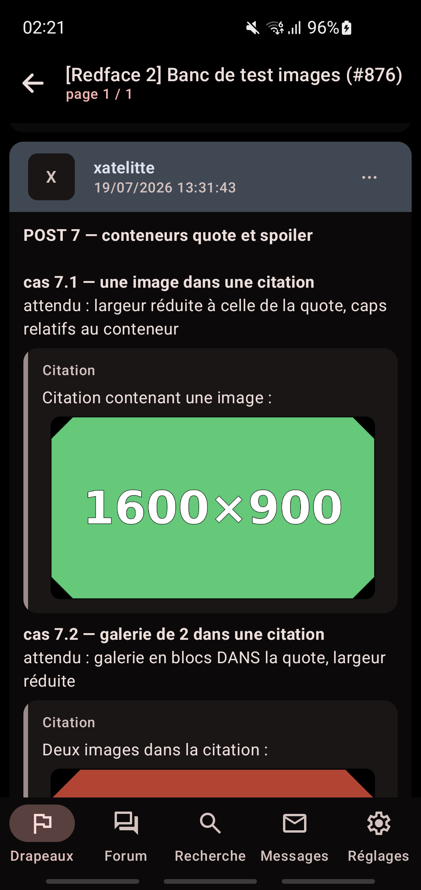
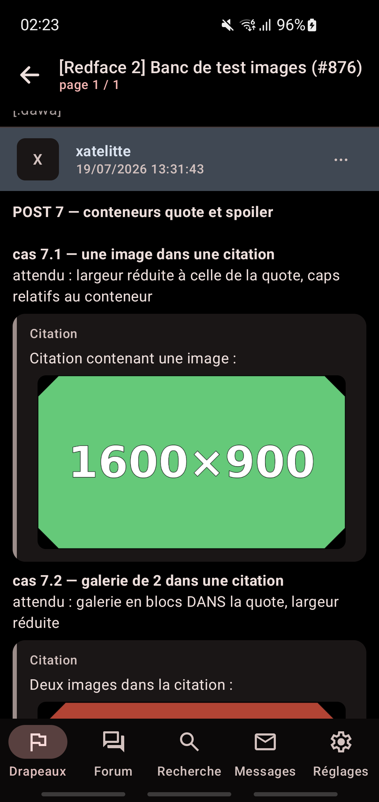
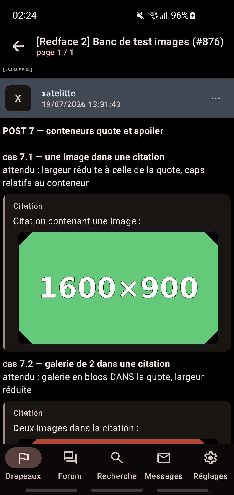
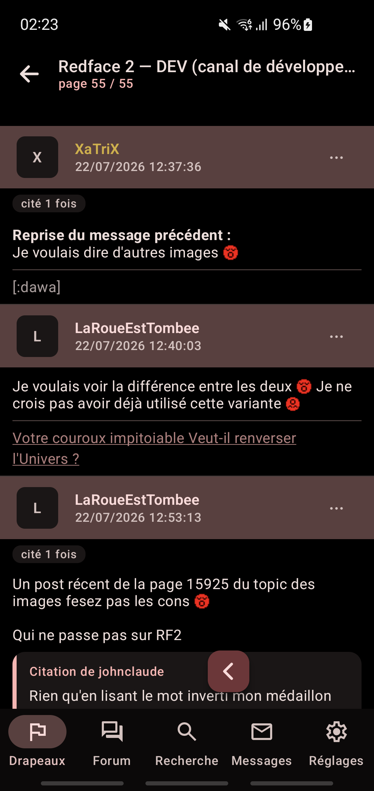
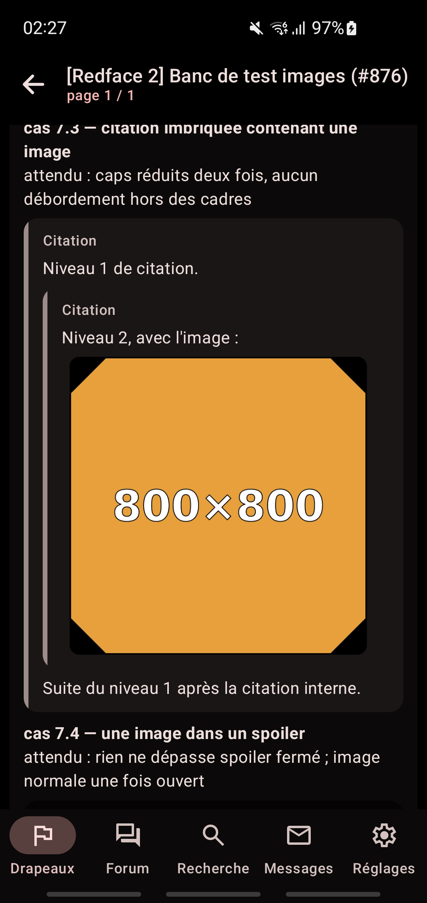
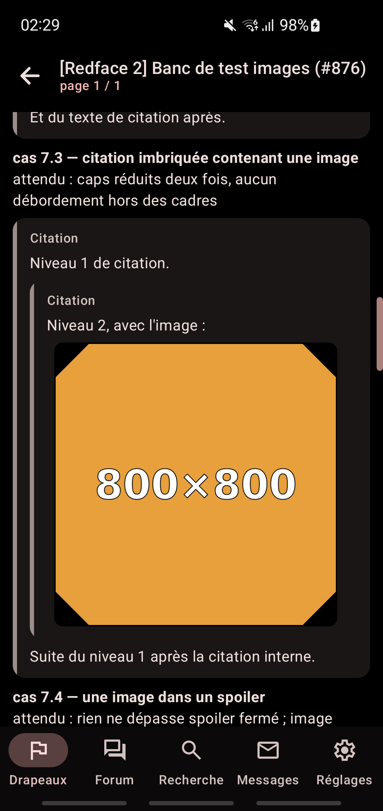
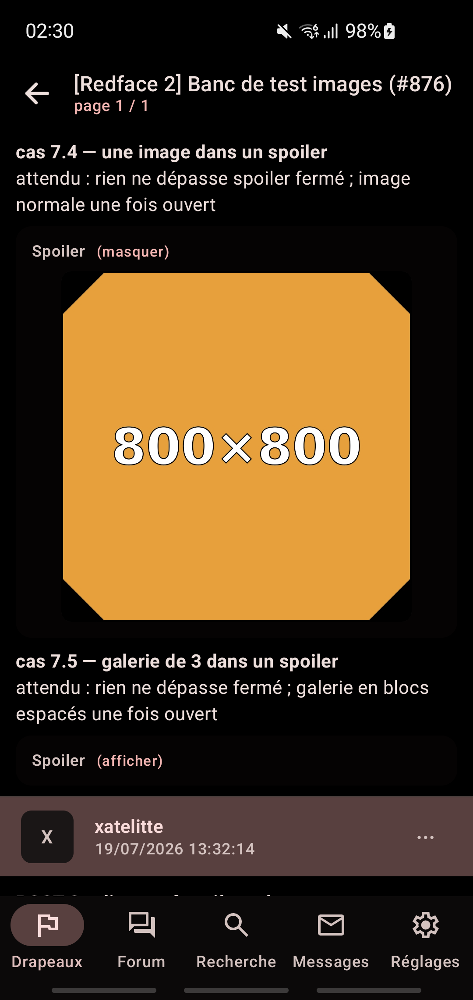

Constat clé : en AMOLED, l'encart actuel est déjà quasi invisible (carte
RGB(11,9,9) sur fond (0,0,0), delta 11/255) — FLAT est visuellement équivalent avec moins de
structure. La bande d'identité (88,64,63) et les barres latérales de quote portent la hiérarchie
dans les deux modes. Point faible PRÉEXISTANT aux deux modes : la surface spoiler (5,3,3),
indiscernable du noir (seul le label la signale). Blocs code : non évaluables, aucun
[fixed] dans le banc (trou de banc à combler si exigé).

AMOLED · P7 · ENCART

AMOLED · P7 · FLAT

AMOLED · P7 · FLAT_EDGE
AMOLED · fil DEV · ENCART

AMOLED · fil DEV · FLATAMOLED · fil DEV · FLAT_EDGE

AMOLED · quotes imbriquées · ENCART

AMOLED · quotes imbriquées · FLAT

AMOLED · spoiler déplié · FLAT (surface quasi invisible)
Voir aussi la maquette statique antérieure :
largeur-images-884.
Arbitrage XaTriX attendu : retenue ou non · optionnelle ou imposée · valeur par défaut.